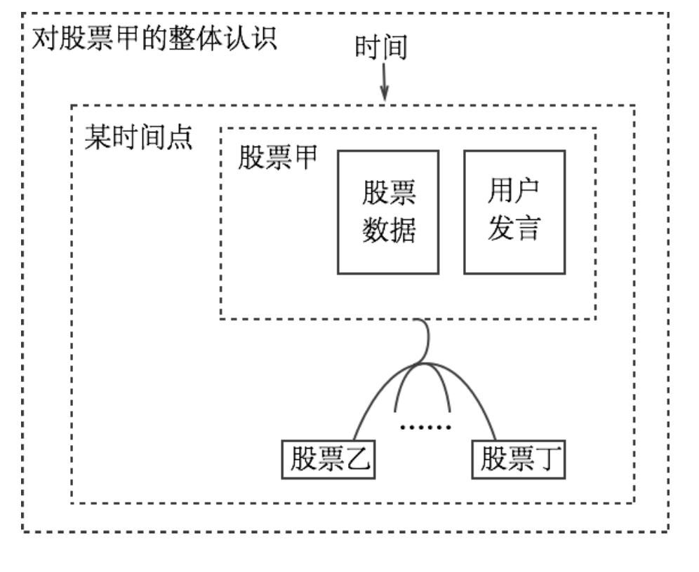

Data Visualization in Stock Forums
OVERVIEW
There are a lot of uncertainties in stock market. Except for looking at graphs, Chinese investors also go to stock forums to exchange information. However, the uncertainty in social media and stock market keep hindering their abilities to make well informed and confident decisions.
DEFINE DESIEN SPACE
Our study mainy researched the source of uncertainty in stock forums, measurement of perceived uncertainty, and standards of information visualization. Our study crawled information in website “Xue Qiu” with the help of python and selenium, and processed the data by regular expressions. We also explored the possibility of visualizing information of website “Xue Qiu” using visualizing tool d3.js to decrease perceived uncertainty when people were making decisions.
How to help people make well-informed and confident decisions in stock trading?
RESEARCH: ElEMENTS IN VISUAL ENCODING
According to research, elements in visual encoding could be divided into five categories: (1) space, (2) symbols, (3) connections (4) Inclusion relationship and (5)Time. Space information is usually mixed with other elements to provide visualization solutions.
Comapring different tools including Tableau, and D3.js, we decided to use D3.js as it is web based javascript library, which provides more flexibility in interactions and is more easy to provide service.
RESEARCH & INTERVIEW: STOCK MARKET
As I'm not familiar with the stock market, the first thing I want to do is to get to know it. I think getting information from experts is much more effecient than reading books, so the very first thing I did is to set up interviews with experienced investors in stock market. I interviewed four people in total. Three of them have more than three years of experience in stock trading and they all invest more than 20 hours a week in stock trading.
1. "I am mainly under the guidence of Theory of Investment Value."
2. "I care more about why people make such decisions, and the evidence, rather than their decisions."
3. "The source of information plays an important role in its credibility."
4. "Cognitive biases drives me to keep looking at information that I already know and agree with."
SYSTEM DESIGN
In stock forums like "Xue Qiu", there are two types of information that are provided: (1) Stock information: including opening rate, closing rate, turn over, limit prices, and advances versus declines. (2)User Generated Content: including user profile, articles, and forum conversations.
I decided to use two visualization methods: (1) Force Chart (2) Word Cloud. To provide raw information, I added another section, called (3) Conversations.
INTERACTION DESIGN
IMPLEMENTATION
when I was working on the capstone project, There was an event that CSR and CNR are combine into CRRC Corporation. Many investors were so interested in that change and they kept talking about it. So, I extract information related to CRRC and its related stocks using selenium+chromewebdriver based on python.
With these information gained, using d3.js, we got the web UI as following: